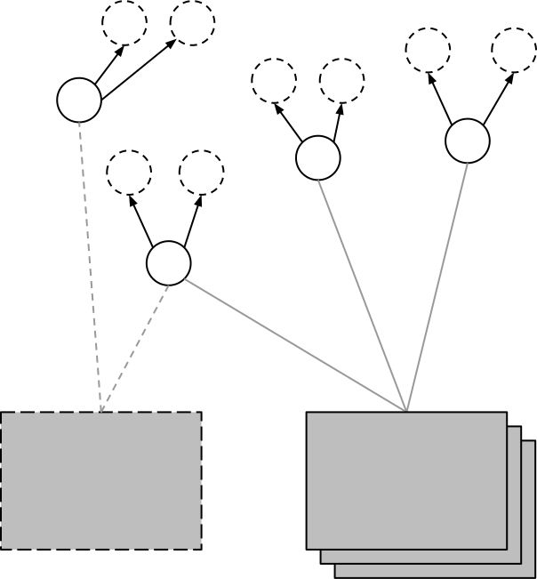

Native Object Storage

Block Storage
ReSTful Object Storage

Distributed Filesystem

Ceph is based on a distributed, autonomic, redundant native object store named RADOS.
Reliable
Autonomic
Distributed
Object
Store
RADOS is a flat namespace where each object has a name, any number of attributes, and a payload of (almost) arbitrary size.
Objects are assigned to Placement Groups (PGs).
Each PG has an ordered list of Object Storage Devices (OSDs) where its contents are stored in a redundant fashion.
Object placement is entirely algorithmic.
There is no central lookup or distributed hashtable.
All OSDs know about and can propagate the current map describing object placement.
Monitor servers (MONs) arbitrate the cluster status and act as authorities for the placement map.
They use a distributed consensus protocol based on Paxos.
Both MONs and OSDs operate entirely in user space.
Enough talk.
Let's take a look.
daisy
eric
frank
Applications can interact with RADOS using a number of APIs.
There are also several high-level client layers that RADOS ships with.